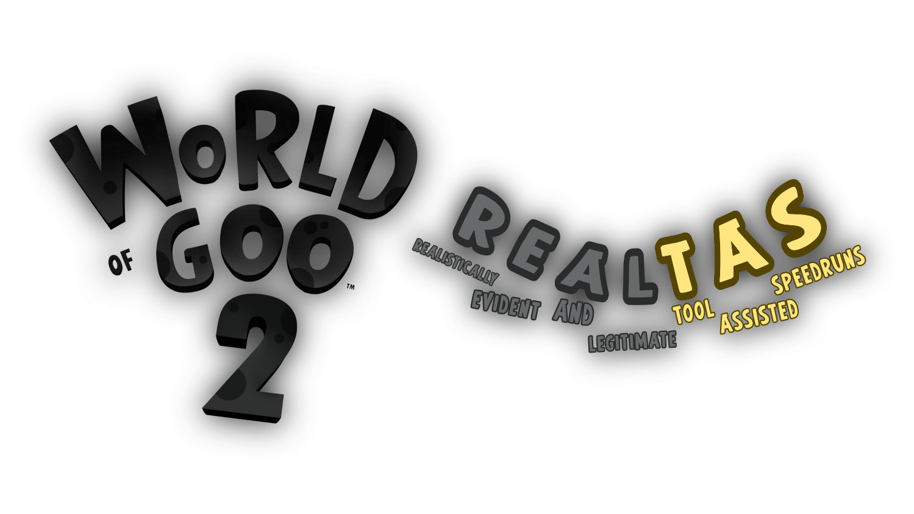

Welcome to World Of Goo 2 realTAS leaderboard! Use the power of the mighty realTAS to achieve better and better scores!
IMPORTANT CLARIFICATION! None of the shown records were made using an actual TAS. As of this writing, there is currently no TAS made for this game. Here - we only emulate the work of the Tool, by slowing down game speed.
How to perform a realTAS run:
- Download and install CheatEngine.
- Launch World Of Goo 2. Leave the game in Windowed Mode.
- Open CheatEngine. Press "Select a process to open" (screen with magnifying glass icon) and open World Of Goo 2 process
- On the right side of the panel, enable "Enable Speedhack" and you will be able to enter a value for the game speed. For realTAS, preferred (but not required) values are in range in-between 0.01 and 0.1. Do not click "Apply" yet.
- Enter the WoG2 level. Wait for the very last moment, before the game gives you control. Try to press "Apply" in CheatEngine in the last possible frame of the wait time.
- Beat the records! But don't forget to record it!
Rules for performing and submitting realTAS runs:
- The only thing you're allowed to modify in World Of Goo 2 with CheatEngine is game speed. (And only by using Speedhack option)
- You're allowed to change the game speed mid-run, however you want.
- CheatEngine is not required to be visible on the recording, but it's encouraged.
- Recordings should be sent on GooFans Discord Server. Once positively reviewed, if the record is beaten, you will get added to the leaderboard.
- BONUS POINTS* for speeding up the slowed down parts of the recordings. For example, if you run the level with the set speed of 0.02, speed it up by 5000%. This way, the video will immitate like if it was done by an actual Assistant-Tool.
*Bonus Points may get lost, due to a catastrophic rounding error.
Site manager:
This website is inspired by World Of Goo World Records Leaderboard website and uses some assets directly from there.